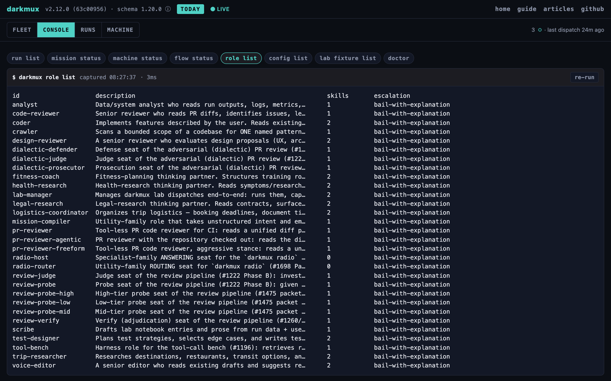
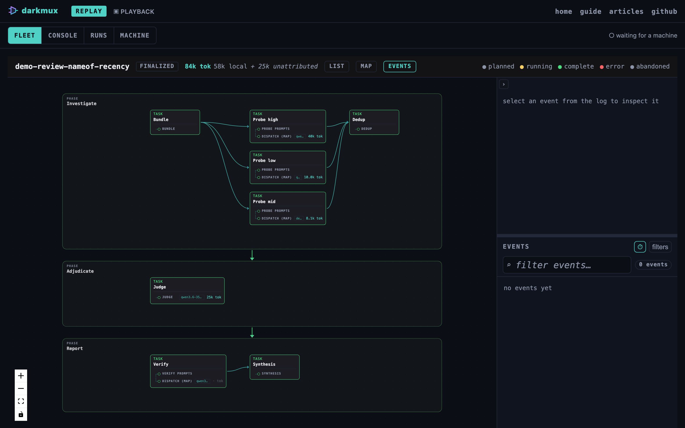
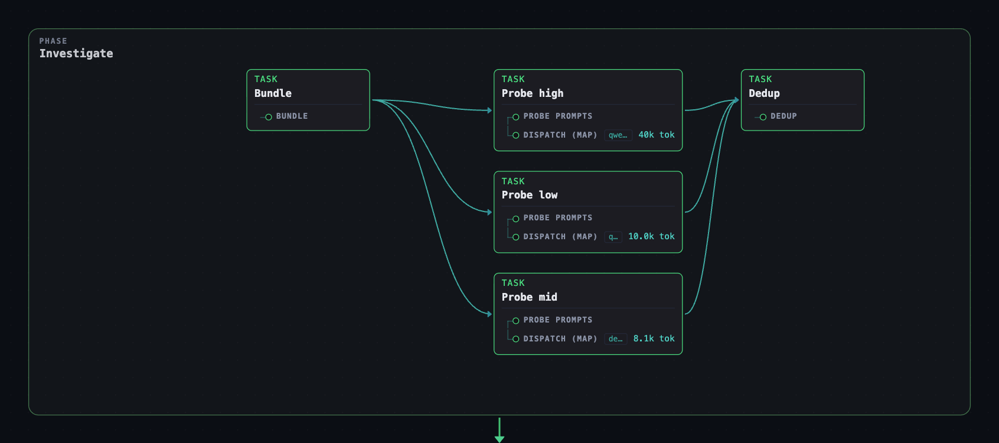

The advanced agentic surface. Use darkmux's crew abstraction to dispatch local-AI roles (coder, code-reviewer, scribe), track multi-step work as missions made of phases, and run structured QA via the review funnel (mission launch review). Optional: everything in earlier sections works without these concepts.
If you're driving darkmux as a CLI for personal model loadout management, you don't need this. The mission/phase/crew layer is for operators using darkmux as the local-AI tier of an agentic workflow, where a frontier orchestrator (Claude, GPT, etc.) is delegating routine implementation work to local models.
Specifically, this section is useful if you want:
mission launch review), which dispatches a code-reviewer crew against the diff./flow.A role is a named local-AI capability: a manifest under templates/builtin/roles/<id>.json (or ~/.darkmux/roles/<id>.json for operator overrides) paired with a system prompt at the same path with a .md extension. The manifest declares:

id, description, skills: the skills list names work-shape descriptors the role is good at. Each skill in turn declares an intrinsic capability profile (code, reasoning, instruction_following, agentic_tool_use) that role-to-model selection scores against.tool_palette: allow and deny lists of tools (read, exec, edit, etc.)escalation_contract: what the role does when it can't solve the task (bail, retry-with-hint, hand-off-to)role_family (optional): specialist (default) or utility; specialist roles get the autonomous-dispatch preamble injected ahead of their prompt (they can't ask questions mid-dispatch, so they escalate with a BLOCKED: line instead).feedback_templates (optional): per-signal overrides for the runtime's model-facing nudges (cycle/loop/cascade/etc.); falls back to the built-in wording when unset.darkmux role list # every role in the index
darkmux role show coder # full details for one roledarkmux dispatch coder "Add tests for the new helper in src/foo.rs"What happens (default runtime, internal):
.md system prompt.darkmux-runtime:latest image is present locally. Bails loud with build instructions if either is missing.darkmux-runtime container per dispatch with a mounted workspace tempdir: kernel-enforced isolation, no cross-task context leak by construction.dispatch.turn, dispatch.tool, and dispatch.reasoning flow records as they happen.dispatch complete or dispatch error record.The dispatch container is intentionally minimal: no project toolchains. The coder, code-reviewer, and test-designer roles are instructed not to install toolchains or run build/test/lint inside the container: their job ends at "the edit is in place + the tests are written," and they name the verification commands the frontier should run on the host afterward. So a role's report won't claim "tests passed" for commands it never ran. Verification is the frontier orchestrator's step, by design.
The internal runtime reads role manifests directly from disk on each dispatch; there's no separate registry to sync.
A mission is a named objective: a directory under ~/.darkmux/missions/<mission-id>/ holding mission.json (description, a list of phase_ids, and a status: active/finalized/paused) plus the mission's own phases/ subdirectory. A phase is a time-boxed work unit inside a mission: its own JSON file at ~/.darkmux/missions/<mission-id>/phases/<phase-id>.json with status (planned/running/complete/abandoned), depends_on, and timestamps. Everything for one mission lives under that one directory. Nothing is split across separate top-level missions/ and phases/ trees.
Note for operators with existing state: earlier versions of darkmux nested everything under ~/.darkmux/crew/ (roles/, missions/, phases/). The loader transparently falls back to that layout. Separately, a mission whose phase JSONs still live under a legacy sprints/ subdirectory (pre-rename) instead of phases/ also reads and writes there transparently. Run darkmux doctor for a copy-pasteable mv script to flatten onto the current layout when you're ready. One older layout is not transparent: the original flat ~/.darkmux/missions/<id>.json + ~/.darkmux/phases/<id>.json shape (pre-mission-scoped-directories) needs an explicit one-time darkmux mission migrate to move into the nested layout above before it'll load. That same verb also synthesizes a config-snapshot.json for any nested-layout mission that predates mission launch and doesn't have one yet: a trivial, task-less config built from the mission's own JSON, so an old hand-authored instance reads honestly as the freeform/manual mission it always was. darkmux mission migrate (dry run) then --apply covers both.
The preferred path is two verbs: darkmux mission propose, which takes unstructured input (pasted text, a Jira ticket via acli, a GitHub issue via gh) and dispatches the mission-compiler utility agent to emit a structured proposal you approve before anything lands; then darkmux mission launch <id>, which mints a running mission instance from what got persisted. Config-launched is the only instance-creation path (see the next section): propose writes the CONFIG, launch mints the INSTANCE.
The input is any text on stdin. The pipe is the interface, so the tools you already have are the source adapters. Pull an issue with gh, a web page with curl, a local file with cat, or the clipboard with pbpaste:
# Pipe operator intent into the compiler
pbpaste | darkmux mission propose --from-stdin
gh issue view 42 | darkmux mission propose --from-stdin
curl -s <url> | darkmux mission propose --from-stdin
cat notes.md | darkmux mission propose --from-stdin
# or use a file: darkmux mission propose --from-file intent.txtThe compiler returns a proposal summary:
┌─ Proposal ──────────────────────────────
Mission: draft-blog-post
Description:
Draft a blog post on local-AI bounded-task patterns.
Phases (2):
1. draft-blog-post-s1-outline (depends_on: none)
Write a one-page outline: thesis, three supporting sections.
2. draft-blog-post-s2-draft (depends_on: draft-blog-post-s1-outline)
Flesh out the outline into a full first draft.
└─────────────────────────────────────────
Approve [y] · Edit/regenerate with hint [e] · Reject [n]: y
mission propose: persisted mission config `draft-blog-post` (2 phase(s))
wrote mission config: ~/.darkmux/mission-configs/draft-blog-post.json
next: darkmux mission launch draft-blog-post to begin (or pass --start next time)The approved proposal is persisted as a mission CONFIG at ~/.darkmux/mission-configs/draft-blog-post.json, not a running instance. Pass --start to launch it immediately instead of stopping after persist:
darkmux mission propose --from-stdin --start
# ... proposal approved, config written, then launched (mission → Active)If you prefer to skip the propose step or are building automation, you can write the config JSON directly at ~/.darkmux/mission-configs/<id>.json, then run darkmux mission launch <id>. This is the escape hatch: recommended for operators who want full control or are scripting workflows. See config authoring below for the shape.
Hand-authoring the running instance JSON directly (writing mission.json/phases/<id>.json yourself under ~/.darkmux/missions/) is not a documented path any more. Those files still exist on disk exactly as before, and they're still plain, human-readable JSON you can open and inspect; but they're now system-managed state that mission launch writes for you, the same way a database's on-disk pages are real files you could technically hand-edit but aren't meant to. Write a config; launch it.
Mission/phase is overhead. It pays back only when you'd benefit from durable state for the work. Three patterns to pick from:
| Pattern | Shape | When |
|---|---|---|
| Skip | No mission. Just darkmux dispatch coder "..." ad-hoc. |
Single-shot work, no follow-up expected. The dispatch record itself is the only artifact you need. |
| Duration container | One mission with phase_ids: []. Start it; close it; that's it. |
You want start/close timestamps for an engagement-level chunk of work, but the work isn't decomposable into named sub-steps. |
| Decomposed plan | Mission + N phases. Pre-plan or grow via mission add-phase. |
Multi-step work where the wall-clock arcs per phase matter, dependencies between phases matter, or you want the viewer's timeline as an explicit feedback surface. |
The practical heuristic: if you can't articulate what the viewer would show you at the end of the mission, you probably don't need a mission. If the answer is "a 3-arc timeline with these durations and these dispatch records", missions earn their keep.
A mission config is the DATA a mission is launched FROM. It declares the phases the launched instance will have, plus (optionally) the runtime-only inputs the launcher needs supplied at launch time (a worktree path, a case id, resolved crew staffing) that don't belong baked into a reusable document. Save it at ~/.darkmux/mission-configs/<id>.json:
{
"id": "draft-blog-post",
"name": "Draft Blog Post",
"description": "Draft a blog post on local-AI bounded-task patterns.",
"schema_version": "1.1",
"phases": [
{
"id": "s1-outline",
"description": "Write a one-page outline: thesis, three supporting sections, closing reframe."
},
{
"id": "s2-draft",
"description": "Flesh out the outline into a full first draft."
}
]
}A phase with no tasks array (as both phases above) is a valid, common shape: a freeform/manual phase whose work happens by hand, or via ad-hoc darkmux dispatch calls, rather than an automated Task/Step graph. Phase order is the list position; there's no separate dependency field to set.
mission launchdarkmux mission launch draft-blog-postThis resolves the config (user tier first, then any on-disk template, then an embedded built-in), validates it, and mints a running mission INSTANCE: mission.json, one phases/<id>.json per declared phase, and a config-snapshot.json, a frozen copy of the resolved config alongside the instance, so a later edit to the source config never orphans an already-running instance's own record of what it ran. For a config whose phases have no tasks (as above), launch mints the instance and starts the mission, then leaves the work to you: do each phase by hand (or via ad-hoc darkmux dispatch calls), and when the whole mission is done, close it out with darkmux mission finalize draft-blog-post (or darkmux mission abort draft-blog-post to kill it). The mission graph derives phase status; the whole-mission terminals reconcile the phases for you.
Every launch mints a fresh, unique instance id (<config-id>-<unix-secs>-<6-hex-token>), whether or not you pass --input/--param values (#1503: two launches of the same config are two different pieces of AI work, never collapsed onto one id). The launch output prints the exact id; use it verbatim for the follow-up commands. Launches of the same config sharing the same inputs are grouped for later comparison via a separate spec fingerprint recorded on the instance (a hash of the collected inputs), useful for corpus analysis, but that fingerprint is never the instance id itself.
A config can declare runtime-only inputs it needs from its launcher (see the built-in coder-phase config for a worked example: it needs a worktree path, a branch, and a base ref). Supply them with a JSON file or individual overrides:
darkmux mission launch coder-phase \
--input inputs.json \
--param role=coder \
--param branch=my-feature--param always wins over the same key in --input's file. Launching a config with a missing required input bails loud, listing exactly what's missing plus a copy-pasteable example of both forms. Launching the SAME config with the SAME inputs twice is not idempotent: each call mints a distinct fresh instance (#1503 removed the old reuse/reopen-by-derived-id path entirely: there's no terminal instance to silently reopen, and no way for a relaunch to collide with a prior run's id).
Exit codes: 0 for a freeform mint, or a coder-phase run whose QA came back clean or flags-only (the run stops at the sign-off gate with the phase still Running); 1 for a coder dispatch error; 2 when QA found blockers to resolve before shipping; 3 when QA could not run and manual review is required; 4 when the instance was minted but the graph uses step kinds this launcher cannot execute yet.
mission config list / showBefore launching, see what's registered and what it would actually do (#1860). darkmux mission config list enumerates every config id across the same user → on-disk → embedded tiers mission launch searches, one row each with its name, winning tier, phase/task counts, and whether it advertises a panel command. A config that fails to load still prints as a row naming the error — one broken user-tier override never hides the rest of the registry.
darkmux mission config listdarkmux mission config show <id> prints the whole graph — every phase, task, and step, the step kind each step names and whether THIS binary can construct it (the identical check mission launch exits 4 against, surfaced before launch instead of at it) — and, for every task with a role_id, the profile and model that role resolves to right now: a launch override, the role_profiles map, or the default_profile fallback (the operator never has to wonder where the decision came from), plus whether that model is currently loaded. Pass --param <role>=<profile> (repeatable) to preview a planned override exactly as mission launch <id> --param <role>=<profile> would apply it — on the review route: review and any variant whose graph uses the review step kinds. On any other config (e.g. coder-phase), mission launch ignores --param <role>=<profile> entirely (a coder-phase --param role=<id> is a DIFFERENT knob — it rebinds the task's own role_id, not a role→profile binding), and show mirrors that: the override is neutered and a warning names why, rather than claiming a parity that doesn't hold.
darkmux mission config show review
darkmux mission config show review --param review-judge=review-midBoth verbs are strictly READ-ONLY and take --json for machine consumption. Neither resolves any NEW data or logic beyond what mission launch/dispatch already resolve silently at run time — this is that same resolution, surfaced ahead of time. A missing profiles registry or an unreachable LMStudio never fails the command: the affected fields report "unavailable" inline instead.
Generated by mission launch at ~/.darkmux/missions/deploy-rewrite/mission.json. This is system-managed state now (see the note above): still plain JSON you can open and read, just not a file you're expected to hand-author:
{
"id": "deploy-rewrite",
"description": "Rewrite the deploy pipeline to use the new artifact store",
"status": "active",
"phase_ids": ["deploy-rewrite-s1-baseline", "deploy-rewrite-s2-cutover"],
"created_ts": 1778685866
}Also generated by mission launch, at ~/.darkmux/missions/deploy-rewrite/phases/deploy-rewrite-s1-baseline.json. The file's own basename is the phase id; mission_id inside it is redundant with the parent directory but kept for self-description (a phase JSON is meaningful even copied out on its own):
{
"id": "deploy-rewrite-s1-baseline",
"mission_id": "deploy-rewrite",
"description": "Capture a baseline of current deploy timing + artifact sizes",
"status": "planned",
"depends_on": [],
"created_ts": 1778685866
}The smallest useful shape: one config, one phase. Just enough to see the lifecycle move and the cyan records land in the viewer.
Any phase, task or step may carry "enabled": false. It is pruned when the run is minted, so the run shows exactly what will execute and nothing gray; the run's config-snapshot.json and graph-report.json record what was left out and why, and mission status prints the count. There is no CLI override: edit the config and launch.
A task may instead declare grow, making it a template that a phase boundary expands. The launcher reads the from task's last step output as a path to a JSON file, takes the array at items, and mints one copy per item, substituting {{item.field}} into the id and every step's config. Zero items grows nothing and the phase still completes.
"grow": { "from": "plan-task", "items": "units", "id": "{{item.id}}",
"config": { "unit": "{{item.id}}", "rule": "{{item.rule}}" } }mkdir -p ~/.darkmux/mission-configsSave the following at ~/.darkmux/mission-configs/draft-blog-post.json:
{
"id": "draft-blog-post",
"name": "Draft Blog Post",
"description": "Draft a blog post on local-AI bounded-task patterns.",
"phases": [
{
"id": "s1-outline",
"description": "Write a one-page outline: thesis, three supporting sections, closing reframe."
}
]
}darkmux mission launch draft-blog-post
# mission `draft-blog-post` minted, Active, phase `draft-blog-post-s1-outline` Planned# …do the work, by hand or via `darkmux dispatch scribe ...`…
darkmux mission finalize draft-blog-post
# mission `draft-blog-post` → Finalized duration=<wall-clock seconds>Every transition emits a flow record. Open darkmux.com/flow/, click Connect, and you'll see the cyan operator-tier records as the lifecycle moves.
You can omit phases entirely. A config with phases: [] is valid: launching it is just a start/close timestamp container for an engagement-level chunk of work that isn't decomposable.
{
"id": "japan-trip-2026-05",
"name": "Japan Trip 2026-05",
"description": "10-day Japan trip, May 20-30."
}Then darkmux mission launch japan-trip-2026-05 once, when the trip begins, and darkmux mission finalize japan-trip-2026-05 when it ends. The viewer will show the wall-clock duration.
You can also mission add-phase later if structure emerges mid-trip. The empty-phase mission grows into a decomposed one as needed.
For mission-shaped work with clear decomposition (a campaign, a deploy, a multi-week research arc), the natural pattern is one config with one phase entry per planned step. Same shape as the minimum-viable example, just more phases in the array.
For example, a marketing-campaign config might declare three phases: positioning research, messaging draft, launch checklist. Display order in the viewer follows the config's phase array order, which becomes the launched mission's phase_ids array order; there's no separate dependency field to set at the phase level.
The examples here aren't all software engineering: blog drafts, marketing campaigns, travel planning all fit. Anywhere you want explicit state for "this is what I'm working toward" and "this is the named piece I'm currently on," mission + phase is the shape. The schema doesn't care what the work is.
# Mission state machine
darkmux mission launch <config> # mint + start the instance → Active (stamps started_ts)
darkmux mission pause <id> # Active → Paused
darkmux mission resume <id> # Paused → Active (paused_ts preserved)
darkmux mission finalize <id> # → Finalized (success terminal: phases → Complete, worktrees torn down)
darkmux mission abort <id> # → Finalized (kill terminal: phases → Abandoned, worktrees torn down)There's no manual per-phase lifecycle any more: the mission graph derives each phase's status, and the whole-mission terminals (finalize/abort) reconcile the phases for you. Every transition emits a flow record. Open the viewer in a new tab as you run these. The phase-progress widget in the header shows N/M done across active missions, and the record stream below shows the cyan operator-tier transitions in order.
If you discover scope mid-mission that belongs in the current plan rather than a new mission, use darkmux mission add-phase:
# Append a new phase to the end of the mission's plan
darkmux mission add-phase <mission-id> \
--phase-id <new-id> \
--description "..." \
[--depends-on <other-phase-id>]
# Insert in the middle, immediately after an existing phase
darkmux mission add-phase <mission-id> \
--phase-id <new-id> \
--description "..." \
--after <existing-phase-id>The verb writes the new Phase JSON, updates the Mission's phase_ids array (at the right position), and emits a phase added flow record. Idempotent on exact-match (same id + mission + description); errors on collision or dangling --after.
The freeform config shape above (a phase with no tasks) covers manual, hand-driven work. The coder-phase and review built-ins are the other end of the same schema: a phase whose tasks array declares a real dependency graph that mission launch executes end-to-end, no per-step dispatch required. This section documents that graph shape directly from the schema and the two shipped built-ins. Read templates/builtin/mission-configs/coder-phase.json and review.json alongside it; they're the canonical worked examples, and every claim below is grounded in them.
A phase's tasks array holds task documents; each task's steps array holds step documents. The fields that matter for authoring a graph (the full struct shape lives in crates/darkmux-crew/src/mission_config/mod.rs):
id, description, an optional display_name (a short operator-facing label; falls back to id when absent), depends_on (a list of other task ids; document-wide, not phase-scoped: a task can depend on a task from an earlier phase), an optional role_id (the default crew role this task dispatches, e.g. "coder"; a launcher's declared inputs may override it per launch), and its own steps array.id, kind (a registered StepKind id; see below), and config (a step-kind-specific JSON object, opaque to the schema itself). Steps within one task run in document order, each depending on the one before it. There's no per-step depends_on field.{
"id": "build",
"tasks": [
{
"id": "build-coder",
"description": "dispatch `coder` into the worktree",
"depends_on": ["build-worktree"],
"role_id": "coder",
"steps": [
{ "id": "build-coder-step", "kind": "mission.coder", "config": null }
]
}
]
}Both built-ins declare "schema_version": "1.3" (the current mission-config schema); a document that omits schema_version still loads and validates cleanly: absence isn't drift, just an unlabeled document.
A task/step id can be written with the OWNING phase's own config id as a literal prefix. The coder-phase built-in does exactly this: its phase is "id": "build", its tasks are build-worktree/build-coder/build-verify, and their steps are build-worktree-step/build-coder-step/build-verify-step. At launch time, mission launch composes the REAL phase id for the running instance (e.g. deploy-rewrite-s1-baseline), and the interpreter (mission_config::interpret) substitutes that real id for the literal build- prefix everywhere it appears as a prefix, so what's persisted is deploy-rewrite-s1-baseline-worktree, never the document's own placeholder build-worktree. The substitution requires the literal - separator, so a phase id like build can't accidentally match an unrelated id like buildup-task.
A document whose ids carry NO such prefix passes through verbatim instead. That's the review built-in's convention: its phase is "id": "investigate", but its tasks are fixed literals like review-bundle-task, never investigate-bundle-task. Both conventions are valid; a config's own top-level description should say which one it uses (both built-ins do, in their first sentence).
A step's kind must resolve against a registered StepKind implementation. darkmux enforces a three-tier decision procedure for where a new kind's Rust implementation lives (see CLAUDE.md's "StepKind tiering" section for the full rationale; the short version: is the CONTROL FLOW itself new?). As a config author, what matters is which kinds are available to write into a config block:
| Tier | Lives at | What |
|---|---|---|
| 1 · generic builtins | crates/darkmux-crew/src/step_kinds/builtins.rs |
dispatch.internal, dispatch.single_shot, dispatch.map, procedural.shell, procedural.noop: config-driven, no mission-specific code behind them. Always available; check here first before assuming a new kind is needed. |
| 2 · reusable patterns | crates/darkmux-crew/src/step_kinds/patterns/ |
Reusable control-flow SHAPES (dedup, multi_pass_confirm) with the domain-specific algorithm plugged in per caller. Not directly nameable in a kind field; they're Rust-level building blocks a Tier 3 kind wraps (a bespoke dedup step's implementation calls the Tier 2 dedup pattern internally). |
| 3 · bespoke | Co-located with the owning mission module: crates/darkmux-lab/src/crawl/ (the crawl/review planning + unit kinds) and src/coder_phase.rs (coder-phase's mission.* kinds) |
Single-purpose, genuinely new control flow. Never lives in darkmux-crew. |
darkmux mission launch resolves every kind it can construct (Tier 1 plus the launch-owned Tier 3 kinds) against one shared registry. A config naming a kind outside that set still loads and mints an instance (lenient-on-read), but the launch can't execute the step.
Both built-in graphs are located by their launchers before execution, and the two pipelines take different (and, as of the #1530 arc, converging) approaches; worth knowing before you copy either one.
The pre-gate steps are found by a fixed naming CONVENTION composed from the real phase id: <phase-id>-worktree-step (kind mission.worktree) and <phase-id>-coder-step (kind mission.coder). The sign-off gate step is instead resolved by DECLARATION: the launcher asks every registered kind whether it's the gate (StepKind::is_gate(); mission.verify is the one kind that answers yes today), falling back to the fixed <phase-id>-verify-step id only if no kind claims the role. Separately, the operator-facing overrides (--param role=/image=/workdir=) attach to whichever task DECLARES the mission.coder/mission.verify step kind, not to a literal task id, so a copied, renamed config still receives them. Net effect: match the built-in's step-id convention for the worktree/coder steps, give your coder/verify steps the right kinds, and a renamed copy keeps working end-to-end.
review has no launcher of its own: it is a mission config on the same building blocks the crawl uses, run by the generic launcher. Its plan-<rule> tasks are plan.sites steps with "source": "diff", each unit-<rule> task grows one dispatch per planned site, and the deliver phase gathers the run's own finding/mod records and renders a GitHub review payload. Nothing is located by a fixed step id, so renaming a task or step in a copy is safe. Two things ARE load-bearing: a plan step needs either a workspace spec or both github and head_sha (from which it derives a one-source spec at that sha), and the phase named by outcome_from is what the run's exit code reads.
Routing to a launcher is structural (which step KINDS a graph declares, not what its id is), so you can save a differently-named variant of any built-in and launch it directly. Copy the built-in JSON to ~/.darkmux/mission-configs/<new-id>.json, edit its id field and whatever else you're tuning (which rules to plan, a different coder role default, the draws per unit), then launch by the new name:
cp templates/builtin/mission-configs/review.json ~/.darkmux/mission-configs/review-lean.json
# edit review-lean.json: trim to two plan/unit rule pairs, set "id": "review-lean"
darkmux mission launch review-lean --param diff_file=... # same kinds, different iddarkmux doctor validates every discoverable mission config (user tier, then on-disk templates, then the embedded built-ins). Structural findings (dangling depends_on, duplicate or empty ids) and schema-version drift surface there before you launch, not mid-run.
darkmux mission launch review runs a code review against the current branch's diff vs. base. It's a full funnel (bundle → probe → dedup → judge → verify → synthesis) that dispatches the code-reviewer role and emits a verdict. This is the standalone form of the same QA the coder-phase pipeline runs automatically at its sign-off gate.
darkmux mission launch review # review the current branch's diff vs. the base branchVerdict bucket reflects the worst severity found:
Output is structured JSON with the full findings list. Gate CI or pre-commit scripts on the verdict bucket when you need to require clean reviews.
The review emits its own flow records (Review category, frontier-tier for the orchestrator narrative, local-tier for the actual reviewer dispatch). Watch the viewer during a review-funnel run to see the full cascade.

Task; the rows inside are its Steps, the same bundle → probe → dedup → judge → verify → synthesis stages described above, rendered from the actual scheduler run rather than drawn by hand.
mission launch coder-phase + mission finalizeEverything the previous sections do by hand (create a worktree, dispatch a coder, review the diff) has a built-in automated form. The built-in coder-phase mission config declares exactly that graph as data, so darkmux mission launch coder-phase mints an instance and takes it through a local sign-off gate in one call; from there your frontier orchestrator ships the git work by hand and darkmux mission finalize closes it out. This is the recommended path for work shaped like "dispatch a coder, get a diff, review it." The manual dance above is still there for anything that doesn't fit that shape, or when you want to drive each step yourself.
mission launch coder-phase: worktree → coder → QA, then stopdarkmux mission launch coder-phase --param workdir=<path> --param branch=<name> --param base=main
darkmux mission launch coder-phase --param workdir=<path> --param branch=<name> --param base=main --param role=coder --timeout 600What happens: darkmux mints a fresh mission instance (#1503: every launch mints a new id; there's no reuse or reopen of a prior run), creates an isolated git worktree + branch off base, dispatches the coder role into it (default role: coder, override with --param role=<id>), then runs the local code-reviewer QA against the resulting diff: the same QA mission launch review runs standalone, but wired in automatically here. It surfaces the coder's result, the tokens-off-meter figure, and the QA findings, then stops: nothing is committed, pushed, or PR'd yet. The phase stays Running at the gate; adjudicating the findings is still your call (or the frontier orchestrator's). The launch gets you to a reviewed diff, not to a merged PR; the frontier ships the git work by hand and mission finalize (or mission abort) finishes the loop.
If a worktree already exists at the target path, the launch bails loud rather than guessing. Since relaunching always mints a brand-new instance (see above), relaunching with the same params does not reuse a prior run: an unfinalized prior run's worktree simply collides instead of being silently adopted. Finalize or abort the prior run (or remove its worktree with git worktree remove) before relaunching into the same path.
mission finalize: ship the git work by hand, then close outdarkmux no longer runs git or gh for you. Once you've adjudicated the QA findings at the gate, your frontier orchestrator ships the change by hand, then mission finalize closes out the darkmux-side state:
git commit ... # commit the reviewed diff
git push ...
gh pr create ...
gh pr merge ... # merge when CI is green
darkmux mission finalize deploy-rewrite # close out darkmux-side statemission finalize is the success terminal: it drives the mission's non-terminal phases to Complete, tears down the worktrees and branches the run created, and flips the mission to Finalized.
mission abort: clean teardownDecided not to ship a gate-held run's work? darkmux mission abort <mission> is the kill terminal and the counterpart to mission finalize: by default it tears down every worktree and branch the mission created, flips all non-terminal phases to Abandoned, and closes the mission. Scope it to a single gate-held coder run with --phase <id>, which removes just that phase's worktree and branch and flips only that phase to Abandoned. Either way, a backed-out run doesn't leave an orphan worktree on disk.
As of darkmux #1230, the coder-phase loop executes through a generic Task/Step dependency-graph scheduler (worktree → dispatch → QA → gate, each a Step within a Task) rather than hardcoded control flow, the same engine the PR-review pipeline runs on. This is implementation detail today: Task/Step aren't yet a CLI surface you author directly, and the viewer doesn't render the graph yet (that's a tracked follow-up). Mentioned here so the vocabulary isn't a surprise if you see task_id/step_id fields in a flow record's payload.
mission dispatchEverything above runs on this machine. If you're coordinating a fleet (multiple darkmux machines sharing a work queue), darkmux mission dispatch <mission> --role <role> fans every phase with no unmet dependencies out across the fleet in parallel instead of running one phase locally and synchronously: each phase becomes a work job the first available runner claims. This is the multi-machine sibling of the local coder-phase launch, not a replacement for it; a single-machine setup has no reason to reach for it.
The fully manual version (useful when you want to drive every step yourself, or the phase's work isn't a clean "dispatch a coder, review the diff" shape):
darkmux mission launch <config>: mints + starts the mission; operator/cyan records land in the viewer.darkmux dispatch coder "<phase task>": local/green records (start + complete) with the model field stamped, and the duration arc visible in the wall-clock graphic.darkmux mission launch review: QA pass; verdict emits to the viewer. Address findings.gh pr create, and gh pr merge when the verdict was clean (or flags-only with nothing material).darkmux mission add-phase rather than filing a separate mission.darkmux mission finalize <m> when the plan is done.The automated equivalent of steps 2–5 above: darkmux mission launch coder-phase --param workdir=<path> --param branch=<name> --param base=main, adjudicate the QA findings it surfaces, ship the git work by hand, then darkmux mission finalize <m>. See the previous section.
Every step writes a flow record. The viewer renders them as an annotated timeline. Wall-clock arcs on the dispatch + phase records show duration; the phase-progress widget shows N/M done.
darkmux's mission/phase/crew model is intentionally operator-owned: missions and phases are JSON files you write; the CLI manages state transitions but never auto-creates or auto-abandons. The orchestrator is expected to propose structure ("this looks like 3 phases; want me to scaffold them?"), but you accept or modify before files land.
If a phase sits in Running status for hours, that's not a bug in darkmux; it's the operator deciding to leave it open. The viewer's wall-clock graphic shows an unbounded sweep on stale running phases: clearly-wrong-looking signal that the operator forgot to close one. By design.